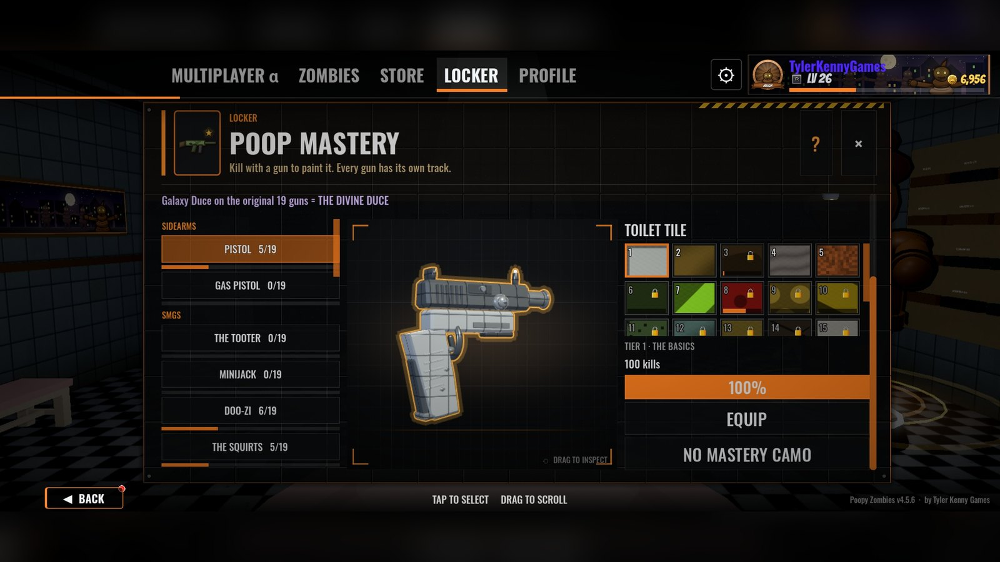
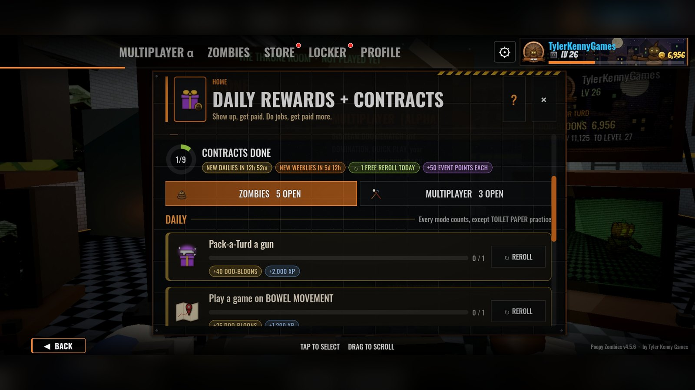
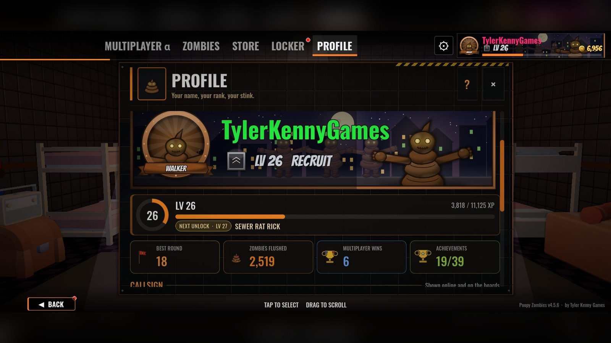
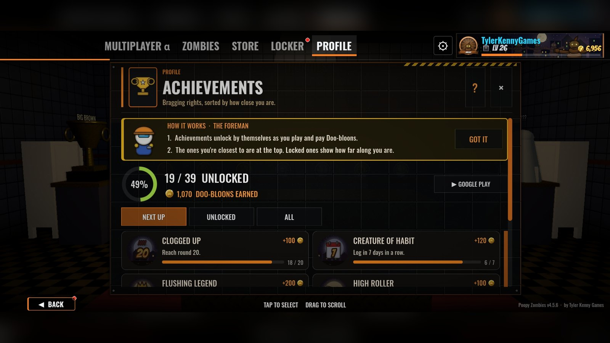
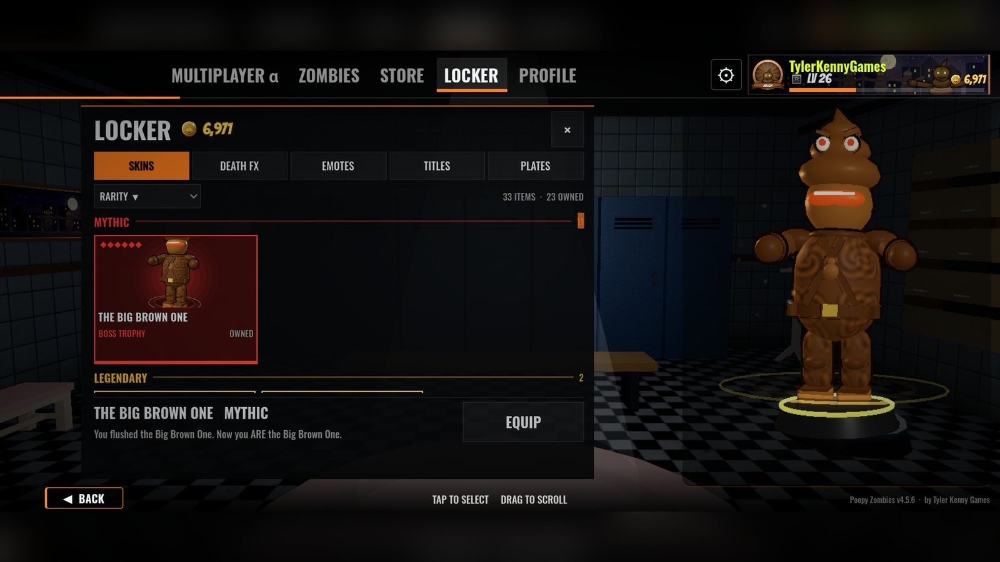
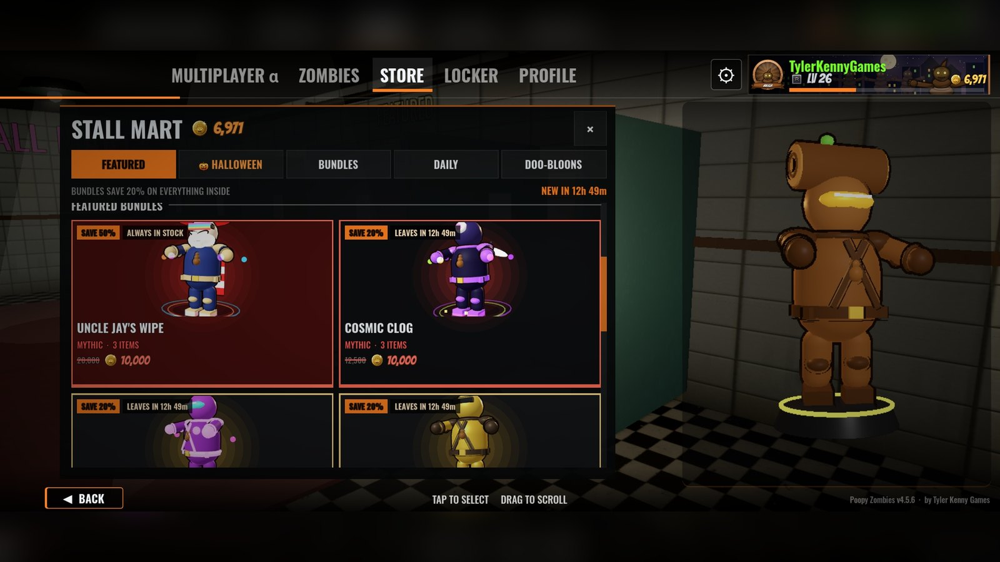

Poopy Zombies 4.5.6 is live on Google Play: Lobbies + Gun Feel
Tyler Kenny · Oct 27, 2026

Poopy Zombies 4.5.6 is out now on Google Play! This one is all about two things: lobbies that actually show you who you're about to fight, and guns that feel better in your hands. It's also my first devlog here since 4.0.3, so there's a lot to catch up on.
Get it on Google Play: play.google.com/store/apps/details?id=com.poopyzombies.game
What's new in 4.5.6: Lobbies + Gun Feel
- New full-screen lobbies: map vote up top, both teams below with every player's class and level
- Back to your lobby after online matches
- Change class mid-match in 5v5 and Infected
- Holo-Poo rebuilt, and every optic is now mounted on the gun
- 7 new attachments, and guns now level up to 30
- Snappier movement and smoother recoil
- Lane signs and team banners on all 5v5 maps
- Fixes for online rematches
Highlights since the last devlog
A lot has changed since 4.0.3. Poopy Zombies is now Poopy Zombies: Multiplayer FPS, in multiplayer alpha:
- 5v5 Flush Wars: The Plungers vs The Brushes online. Team Dookiematch (first to 40) and Domination (hold 3 thrones, first to 150), plus Infected and Rival 1v1. Bots fill empty seats so matches start fast.
- Zombies Online: round-based co-op with up to 4 players. Solo with AI squadmates, split screen and local Wi-Fi are all still here.
- Create-a-Class: build up to 5 classes with a primary, secondary, lethal and tactical. Every gun earns XP as you use it and levels up to unlock attachments in the Gunsmith (8 slots, pick any 5, with saved builds).
- Poop Mastery camos: kill with a gun to paint it, tier by tier. Get Galaxy Duce on the original 19 guns to unlock The Divine Duce.
- Daily rewards and contracts: a daily login reward, 3 daily and 3 weekly contracts across Zombies and multiplayer that pay out Doo-bloons.
- Profile: your level, your next unlock, zombies flushed, multiplayer wins and achievement progress in one place. 55 player levels plus prestige.
- Achievements: 39 Google Play Games achievements, each one pays Doo-bloons, plus 24 leaderboards.
- Locker and Stall Mart: skins, Death FX, emotes, titles and name plates, with featured bundles and a daily rotation in the shop.
- Gun feel: learnable recoil patterns, aim sway and real sights you look through.
- 18 languages, plus 90 and 120 FPS options for phones with fast screens.
Watch it in action
- 5v5 Flush Wars: Plungers vs Brushes on New Town
- Welcome to Town: 17 zones, power-ups, a boss and zombies
- Sewer Subway Trailer
- Big Flush Update: online multiplayer + full revamp
More videos on YouTube @tylerkennygames, and screenshots plus the full feature list on my website.
Thanks for playing
Multiplayer is still in alpha, so things will keep changing and your feedback really does shape what comes next. Found a bug or have an idea? Email me at tylerkennygames@gmail.com.
Now go flush something.
Tyler
Watch







Also posted on itch.io.